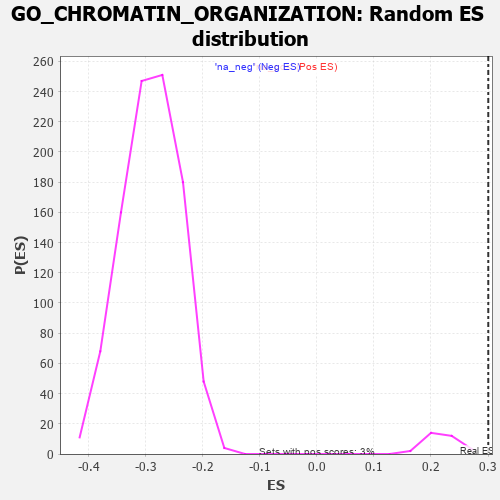

| | | Dataset | 7d |
| Phenotype | NoPhenotypeAvailable |
| Upregulated in class | na_pos |
| GeneSet | GO_CHROMATIN_ORGANIZATION |
| Enrichment Score (ES) | 0.30041268 |
| Normalized Enrichment Score (NES) | 1.3601528 |
| Nominal p-value | 0.0 |
| FDR q-value | 0.38120687 |
| FWER p-Value | 1.0 |
Table: GSEA Results Summary
 Fig 1: Enrichment plot: GO_CHROMATIN_ORGANIZATION
Fig 1: Enrichment plot: GO_CHROMATIN_ORGANIZATION
Profile of the Running ES Score & Positions of GeneSet Members on the Rank Ordered List
| PROBE | GENE SYMBOL | GENE_TITLE | RANK IN GENE LIST | RANK METRIC SCORE | RUNNING ES | CORE ENRICHMENT | | 1 | H2BE1 | | | 16 | 4.938 | 0.0537 | Yes |
| 2 | H2AX | | | 20 | 4.738 | 0.1069 | Yes |
| 3 | SPI1 | | | 162 | 1.182 | 0.1021 | Yes |
| 4 | CDC45 | | | 239 | 0.950 | 0.1031 | Yes |
| 5 | ELOF1 | | | 312 | 0.802 | 0.1029 | Yes |
| 6 | RRP8 | | | 403 | 0.699 | 0.0992 | Yes |
| 7 | H2AJ | | | 404 | 0.697 | 0.1071 | Yes |
| 8 | EED | | | 409 | 0.690 | 0.1143 | Yes |
| 9 | CENPS | | | 439 | 0.666 | 0.1181 | Yes |
| 10 | HAT1 | | | 454 | 0.659 | 0.1238 | Yes |
| 11 | LEO1 | | | 463 | 0.655 | 0.1302 | Yes |
| 12 | MYOD1 | | | 504 | 0.628 | 0.1321 | Yes |
| 13 | PKN1 | | | 535 | 0.619 | 0.1352 | Yes |
| 14 | MCM2 | | | 546 | 0.614 | 0.1409 | Yes |
| 15 | JMJD6 | | | 553 | 0.613 | 0.1470 | Yes |
| 16 | HIRA | | | 568 | 0.608 | 0.1521 | Yes |
| 17 | CCNB1 | | | 581 | 0.601 | 0.1574 | Yes |
| 18 | RBL2 | | | 593 | 0.596 | 0.1627 | Yes |
| 19 | AURKC | | | 633 | 0.583 | 0.1642 | Yes |
| 20 | NOC2L | | | 647 | 0.578 | 0.1691 | Yes |
| 21 | WDR61 | | | 734 | 0.549 | 0.1642 | Yes |
| 22 | SETD3 | | | 754 | 0.544 | 0.1679 | Yes |
| 23 | RERE | | | 787 | 0.536 | 0.1699 | Yes |
| 24 | PHF10 | | | 834 | 0.523 | 0.1699 | Yes |
| 25 | SGF29 | | | 840 | 0.521 | 0.1751 | Yes |
| 26 | BAZ1B | | | 861 | 0.516 | 0.1784 | Yes |
| 27 | ASF1B | | | 863 | 0.515 | 0.1841 | Yes |
| 28 | HDAC8 | | | 881 | 0.510 | 0.1876 | Yes |
| 29 | PARG | | | 884 | 0.509 | 0.1931 | Yes |
| 30 | HMGB2 | | | 892 | 0.507 | 0.1980 | Yes |
| 31 | HDAC5 | | | 900 | 0.506 | 0.2028 | Yes |
| 32 | HCFC1 | | | 902 | 0.506 | 0.2084 | Yes |
| 33 | CTR9 | | | 964 | 0.492 | 0.2061 | Yes |
| 34 | MEN1 | | | 1003 | 0.483 | 0.2066 | Yes |
| 35 | HMGB4 | | | 1008 | 0.482 | 0.2116 | Yes |
| 36 | ING3 | | | 1039 | 0.476 | 0.2131 | Yes |
| 37 | TAF9 | | | 1046 | 0.475 | 0.2177 | Yes |
| 38 | WDR70 | | | 1066 | 0.470 | 0.2205 | Yes |
| 39 | DEK | | | 1088 | 0.466 | 0.2231 | Yes |
| 40 | BRD8 | | | 1101 | 0.463 | 0.2268 | Yes |
| 41 | KMT2A | | | 1130 | 0.458 | 0.2284 | Yes |
| 42 | RCOR1 | | | 1211 | 0.445 | 0.2231 | Yes |
| 43 | RBBP7 | | | 1220 | 0.443 | 0.2271 | Yes |
| 44 | KAT8 | | | 1231 | 0.442 | 0.2308 | Yes |
| 45 | CHD3 | | | 1232 | 0.442 | 0.2358 | Yes |
| 46 | KAT7 | | | 1240 | 0.440 | 0.2398 | Yes |
| 47 | KDM7A | | | 1248 | 0.439 | 0.2439 | Yes |
| 48 | CDC73 | | | 1265 | 0.436 | 0.2468 | Yes |
| 49 | SCMH1 | | | 1300 | 0.428 | 0.2472 | Yes |
| 50 | AEBP2 | | | 1315 | 0.426 | 0.2502 | Yes |
| 51 | NRDE2 | | | 1320 | 0.425 | 0.2545 | Yes |
| 52 | SSRP1 | | | 1323 | 0.424 | 0.2591 | Yes |
| 53 | UBR2 | | | 1334 | 0.423 | 0.2626 | Yes |
| 54 | RCCD1 | | | 1391 | 0.412 | 0.2600 | Yes |
| 55 | CARM1 | | | 1413 | 0.408 | 0.2619 | Yes |
| 56 | GRWD1 | | | 1449 | 0.401 | 0.2619 | Yes |
| 57 | TAF6 | | | 1512 | 0.389 | 0.2583 | Yes |
| 58 | DPF3 | | | 1541 | 0.385 | 0.2591 | Yes |
| 59 | DCAF1 | | | 1559 | 0.381 | 0.2612 | Yes |
| 60 | TADA3 | | | 1580 | 0.378 | 0.2629 | Yes |
| 61 | PAF1 | | | 1588 | 0.376 | 0.2662 | Yes |
| 62 | KDM1B | | | 1618 | 0.371 | 0.2667 | Yes |
| 63 | DDB1 | | | 1642 | 0.366 | 0.2679 | Yes |
| 64 | KDM5D | | | 1716 | 0.353 | 0.2625 | Yes |
| 65 | KMT2E | | | 1730 | 0.350 | 0.2647 | Yes |
| 66 | RCOR2 | | | 1752 | 0.345 | 0.2659 | Yes |
| 67 | VRK1 | | | 1766 | 0.343 | 0.2681 | Yes |
| 68 | FMR1 | | | 1816 | 0.334 | 0.2656 | Yes |
| 69 | RTF1 | | | 1844 | 0.329 | 0.2658 | Yes |
| 70 | CHD4 | | | 1845 | 0.329 | 0.2696 | Yes |
| 71 | OTUB1 | | | 1857 | 0.326 | 0.2718 | Yes |
| 72 | SMAD4 | | | 1860 | 0.326 | 0.2752 | Yes |
| 73 | RBBP5 | | | 1875 | 0.323 | 0.2771 | Yes |
| 74 | EMSY | | | 1929 | 0.316 | 0.2738 | Yes |
| 75 | TASOR | | | 1931 | 0.316 | 0.2773 | Yes |
| 76 | GPX4 | | | 1989 | 0.306 | 0.2734 | Yes |
| 77 | MCRS1 | | | 1996 | 0.305 | 0.2761 | Yes |
| 78 | DMAP1 | | | 2025 | 0.301 | 0.2759 | Yes |
| 79 | ZMIZ2 | | | 2052 | 0.298 | 0.2759 | Yes |
| 80 | IRF4 | | | 2054 | 0.298 | 0.2791 | Yes |
| 81 | KDM3A | | | 2078 | 0.294 | 0.2795 | Yes |
| 82 | SART3 | | | 2084 | 0.293 | 0.2822 | Yes |
| 83 | BRPF1 | | | 2085 | 0.293 | 0.2855 | Yes |
| 84 | TAF7 | | | 2092 | 0.292 | 0.2880 | Yes |
| 85 | PCGF3 | | | 2099 | 0.291 | 0.2905 | Yes |
| 86 | INO80 | | | 2120 | 0.288 | 0.2912 | Yes |
| 87 | JADE1 | | | 2141 | 0.286 | 0.2918 | Yes |
| 88 | PSME4 | | | 2143 | 0.285 | 0.2949 | Yes |
| 89 | CHD1 | | | 2168 | 0.282 | 0.2950 | Yes |
| 90 | MORC2 | | | 2171 | 0.281 | 0.2979 | Yes |
| 91 | UBE2A | | | 2183 | 0.278 | 0.2997 | Yes |
| 92 | CDK2 | | | 2226 | 0.272 | 0.2973 | Yes |
| 93 | BAZ2A | | | 2227 | 0.272 | 0.3004 | Yes |
| 94 | PRDM5 | | | 2265 | 0.265 | 0.2986 | No |
| 95 | NSD3 | | | 2279 | 0.263 | 0.2999 | No |
| 96 | REST | | | 2308 | 0.259 | 0.2993 | No |
| 97 | SIN3A | | | 2361 | 0.251 | 0.2954 | No |
| 98 | TDRD3 | | | 2419 | 0.242 | 0.2908 | No |
| 99 | MTA3 | | | 2443 | 0.237 | 0.2905 | No |
| 100 | KAT6A | | | 2444 | 0.237 | 0.2932 | No |
| 101 | KDM1A | | | 2447 | 0.237 | 0.2956 | No |
| 102 | KAT2B | | | 2502 | 0.226 | 0.2912 | No |
| 103 | HUWE1 | | | 2506 | 0.225 | 0.2934 | No |
| 104 | MBD3 | | | 2524 | 0.223 | 0.2937 | No |
| 105 | KDM4B | | | 2587 | 0.215 | 0.2882 | No |
| 106 | KAT5 | | | 2644 | 0.206 | 0.2833 | No |
| 107 | EPC1 | | | 2663 | 0.204 | 0.2833 | No |
| 108 | ARID2 | | | 2664 | 0.204 | 0.2856 | No |
| 109 | TAF12 | | | 2686 | 0.201 | 0.2851 | No |
| 110 | KDM6A | | | 2690 | 0.200 | 0.2870 | No |
| 111 | NSD2 | | | 2784 | 0.185 | 0.2771 | No |
| 112 | KAT6B | | | 2821 | 0.180 | 0.2745 | No |
| 113 | PHF14 | | | 2838 | 0.178 | 0.2745 | No |
| 114 | DAPK3 | | | 2880 | 0.169 | 0.2711 | No |
| 115 | WDR5 | | | 2892 | 0.168 | 0.2716 | No |
| 116 | SMYD1 | | | 2998 | 0.150 | 0.2598 | No |
| 117 | BRD7 | | | 3018 | 0.147 | 0.2590 | No |
| 118 | BRCA2 | | | 3024 | 0.146 | 0.2600 | No |
| 119 | BRDT | | | 3028 | 0.145 | 0.2612 | No |
| 120 | LEF1 | | | 3037 | 0.144 | 0.2618 | No |
| 121 | UFL1 | | | 3041 | 0.144 | 0.2631 | No |
| 122 | HDAC1 | | | 3086 | 0.138 | 0.2590 | No |
| 123 | TLK1 | | | 3098 | 0.137 | 0.2591 | No |
| 124 | SETD6 | | | 3420 | 0.087 | 0.2188 | No |
| 125 | TOP1 | | | 3449 | 0.084 | 0.2161 | No |
| 126 | CDK5 | | | 3480 | 0.080 | 0.2132 | No |
| 127 | UBR5 | | | 3518 | 0.074 | 0.2092 | No |
| 128 | HDAC3 | | | 3528 | 0.072 | 0.2089 | No |
| 129 | KMT2C | | | 3544 | 0.069 | 0.2077 | No |
| 130 | LRWD1 | | | 3582 | 0.063 | 0.2037 | No |
| 131 | MAPK3 | | | 3589 | 0.062 | 0.2036 | No |
| 132 | WAC | | | 3618 | 0.056 | 0.2006 | No |
| 133 | SKP1 | | | 3663 | 0.049 | 0.1955 | No |
| 134 | DAXX | | | 3722 | 0.038 | 0.1885 | No |
| 135 | SKI | | | 3762 | 0.032 | 0.1838 | No |
| 136 | NSD1 | | | 3779 | 0.031 | 0.1821 | No |
| 137 | CHD1L | | | 3819 | 0.024 | 0.1774 | No |
| 138 | KDM5C | | | 3835 | 0.022 | 0.1757 | No |
| 139 | NIPBL | | | 3900 | 0.010 | 0.1676 | No |
| 140 | VPS72 | | | 3948 | 0.003 | 0.1616 | No |
| 141 | NCOR1 | | | 3961 | 0.000 | 0.1600 | No |
| 142 | EYA1 | | | 3987 | -0.006 | 0.1569 | No |
| 143 | ATG5 | | | 4051 | -0.016 | 0.1489 | No |
| 144 | TAL1 | | | 4064 | -0.018 | 0.1476 | No |
| 145 | GFI1 | | | 4168 | -0.037 | 0.1347 | No |
| 146 | ENY2 | | | 4195 | -0.041 | 0.1318 | No |
| 147 | PAX5 | | | 4255 | -0.051 | 0.1248 | No |
| 148 | RSF1 | | | 4267 | -0.053 | 0.1240 | No |
| 149 | TDG | | | 4290 | -0.058 | 0.1218 | No |
| 150 | CTBP1 | | | 4323 | -0.064 | 0.1184 | No |
| 151 | SETD5 | | | 4343 | -0.067 | 0.1167 | No |
| 152 | CHD9 | | | 4425 | -0.081 | 0.1072 | No |
| 153 | SETD2 | | | 4443 | -0.084 | 0.1060 | No |
| 154 | ERCC6 | | | 4464 | -0.087 | 0.1044 | No |
| 155 | LRRK2 | | | 4467 | -0.087 | 0.1051 | No |
| 156 | SNW1 | | | 4514 | -0.096 | 0.1003 | No |
| 157 | CXXC1 | | | 4557 | -0.107 | 0.0961 | No |
| 158 | BAG6 | | | 4563 | -0.108 | 0.0967 | No |
| 159 | GATA3 | | | 4614 | -0.120 | 0.0916 | No |
| 160 | TAF10 | | | 4652 | -0.128 | 0.0883 | No |
| 161 | MIER2 | | | 4703 | -0.140 | 0.0834 | No |
| 162 | WBP2 | | | 4780 | -0.153 | 0.0754 | No |
| 163 | PPM1D | | | 4805 | -0.158 | 0.0741 | No |
| 164 | TLK2 | | | 4909 | -0.179 | 0.0628 | No |
| 165 | CBX3 | | | 4923 | -0.183 | 0.0632 | No |
| 166 | ATRX | | | 4929 | -0.184 | 0.0647 | No |
| 167 | SUZ12 | | | 4931 | -0.185 | 0.0666 | No |
| 168 | EP300 | | | 4941 | -0.186 | 0.0676 | No |
| 169 | TAF5 | | | 5031 | -0.204 | 0.0584 | No |
| 170 | ING4 | | | 5084 | -0.221 | 0.0542 | No |
| 171 | DDX11 | | | 5102 | -0.225 | 0.0546 | No |
| 172 | FLCN | | | 5140 | -0.235 | 0.0525 | No |
| 173 | HDAC6 | | | 5183 | -0.244 | 0.0498 | No |
| 174 | ASH1L | | | 5203 | -0.248 | 0.0502 | No |
| 175 | ATM | | | 5210 | -0.249 | 0.0522 | No |
| 176 | CDK1 | | | 5264 | -0.262 | 0.0483 | No |
| 177 | WDR82 | | | 5268 | -0.264 | 0.0509 | No |
| 178 | SMYD2 | | | 5598 | -0.344 | 0.0125 | No |
| 179 | RING1 | | | 5856 | -0.420 | -0.0159 | No |
| 180 | SET | | | 5895 | -0.434 | -0.0159 | No |
| 181 | CHD2 | | | 5930 | -0.445 | -0.0152 | No |
| 182 | PCGF2 | | | 5943 | -0.451 | -0.0117 | No |
| 183 | LDB1 | | | 5944 | -0.451 | -0.0066 | No |
| 184 | BAHD1 | | | 6132 | -0.514 | -0.0248 | No |
| 185 | RNF8 | | | 6147 | -0.518 | -0.0208 | No |
| 186 | FEZF2 | | | 6150 | -0.519 | -0.0152 | No |
| 187 | RAG1 | | | 6176 | -0.530 | -0.0124 | No |
| 188 | ZNFX1 | | | 6329 | -0.588 | -0.0253 | No |
| 189 | UBE2N | | | 6407 | -0.621 | -0.0282 | No |
| 190 | SOX2 | | | 6477 | -0.652 | -0.0297 | No |
| 191 | M1AP | | | 6537 | -0.680 | -0.0296 | No |
| 192 | TPR | | | 6597 | -0.709 | -0.0292 | No |
| 193 | PAK1 | | | 6691 | -0.757 | -0.0327 | No |
| 194 | DOT1L | | | 6939 | -0.897 | -0.0543 | No |
| 195 | DPY30 | | | 6976 | -0.923 | -0.0485 | No |
| 196 | RBBP4 | | | 7123 | -1.010 | -0.0559 | No |
| 197 | DYDC1 | | | 7246 | -1.118 | -0.0590 | No |
| 198 | CDK9 | | | 7266 | -1.138 | -0.0486 | No |
| 199 | SYCP1 | | | 7295 | -1.167 | -0.0390 | No |
| 200 | LOXL2 | | | 7403 | -1.269 | -0.0384 | No |
| 201 | NEK11 | | | 7579 | -1.521 | -0.0438 | No |
| 202 | IWS1 | | | 7613 | -1.587 | -0.0301 | No |
| 203 | TAF1 | | | 7643 | -1.633 | -0.0154 | No |
| 204 | KDM8 | | | 7676 | -1.695 | -0.0003 | No |
| 205 | ARRB1 | | | 7935 | -3.377 | 0.0046 | No |
Table: GSEA details [plain text format]

Fig 2: GO_CHROMATIN_ORGANIZATION: Random ES distribution
Gene set null distribution of ES for GO_CHROMATIN_ORGANIZATION